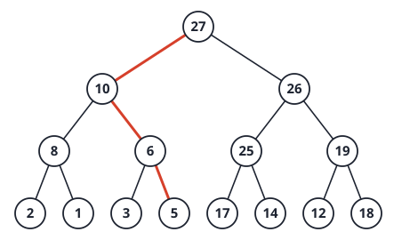
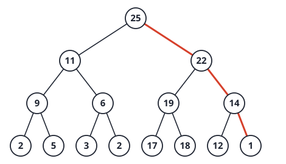
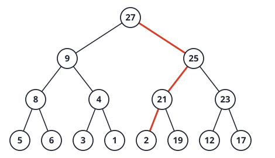

4. Quicksort, the sorting lower bound, linear-time sorts
Facts
Describe the lecture’s partition. How many comparisons does it make on k elements?
Answer
Swap the middle element to the front as pivot. Scan i=low+1..high: if slot[i]< pivot, increment
last_small and swap slot[i] with slot[last\_small]. Finally swap the pivot
into position last_small. Every non-pivot element is
compared with the pivot once: exactly k-1 comparisons.
Give quicksort’s best, worst and average running time, and the input that causes the worst case.
Answer
Best \Theta(n\log n) (balanced splits). Worst \Theta(n^2): T(n)=T(n-1)+(n-1), when the pivot is always the minimum or maximum. Average \approx1.39\,n\lg n=\Theta(n\log n).
Does choosing the median of three (A[low], A[mid], A[high]) remove the \Theta(n^2) worst case?
Answer
No. It avoids the worst case on sorted and reverse-sorted input, but an adversary can arrange keys so the median of the three is always the second smallest, giving splits of sizes 1 and n-2: T(n)=T(n-2)+\Theta(n)=\Theta(n^2). Only an O(n) exact median guarantees O(n\log n).
Space and stability of quicksort.
Answer
In place apart from the recursion stack: O(\log n) expected, O(n) worst case. Not stable, because partitioning swaps distant elements.
What is the Dutch national flag problem, and its cost?
Answer
Partition an array into three groups (red, white, blue) in one pass. Keep pointers r (end of reds), u (first unexamined) and b (start of blues), examine slot[u] and swap it into the right region. O(n) time, O(1) space. It is a 3-way partition, useful with many duplicate keys.
State the comparison-sort lower bound and its proof idea.
Answer
Every comparison sort needs \Omega(n\log n) comparisons in the worst case. A decision tree for n keys has at least n! leaves (one per permutation) and is binary, so height h\ge\lceil\lg(n!)\rceil=\Omega(n\log n) (since \lg n!\ge\frac n2\lg\frac n2). The height is the worst-case comparisons.
What is the depth of the shallowest leaf in the decision tree of a correct comparison sort?
Answer
n-1. The comparisons on the path to a leaf must connect all n keys (otherwise two keys were never related and the order is not determined), and connecting n nodes needs at least n-1 edges.
Counting sort: assumptions, steps, time and space.
Answer
Keys are integers in [0..k]. Count each key, prefix-sum the counts into final positions, then place elements. Time \Theta(n+k), extra space \Theta(n+k), not in place. It does no comparisons, so the n\log n bound does not apply.
What must the placement loop of counting sort do for stability, and what happens if it runs forward instead?
Answer
It must run backwards (j=n-1 down to 0), because the count array gives the last slot of each key. Running forwards still sorts correctly but reverses the order of equal keys, so the sort is no longer stable.
Radix sort: order of digits, cost, and the requirement on the inner sort.
Answer
Sort by the least significant digit first, then the next, up to the most significant. With d digits in base k: \Theta(d(n+k)) using counting sort per digit. The inner sort must be stable, otherwise later passes destroy the order set by earlier passes.
When is radix sort faster than n\log n? Give a case.
Answer
n integers below n^c (constant c): use base n, so d=c digits and \Theta(c\,(n+n))=\Theta(n). It is not faster in general: with d about \lg n it is again \Theta(n\log n).
Problems
Problem 1: one array, three sorts
(a) Partition [6,3,9,1,8,2,7] with the lecture partition (middle element as pivot). Give the array after partitioning, the returned index, and the number of comparisons.
Answer
low=0, high=6, mid=3. The pivot is A[3]=1. Swap A[0]\leftrightarrow A[3]: [1,3,9,6,8,2,7], pivot 1,
last_small=0. No other key is smaller than 1, so no swaps
happen. Finally swap A[0] with A[0]. Result [1,3,9,6,8,2,7], return index 0, 6
comparisons (k-1 with k=7). The left part is empty and the right
part has 6 elements, the worst possible split.
(b) The pivot was the minimum. Does one bad partition ruin the running time? What input makes it happen at every level with this middle-element rule?
Answer
One bad split costs only one extra level. The total is \Theta(n^2) only if it happens at every level. For the middle-element rule this needs the minimum (or maximum) of every sub-array to sit in its middle. Example (checked by running all 7! orderings): [6,5,4,0,3,1,2] makes exactly 21=\frac{7\cdot6}{2} comparisons, the maximum. Sorted input is not a worst case for the middle-element pivot (sorted 9 keys take 16 comparisons, against a worst case of 36), unlike for a first-element pivot.
(c) You must sort 10^6 integers in [0,999]. Compare quicksort with counting sort in time and space, and say which you would choose.
Answer
Counting sort: \Theta(n+k)=10^6+10^3 operations and about 10^6 extra cells. Quicksort: about 1.39\cdot10^6\cdot20\approx2.8\times10^7 comparisons, in place. Counting sort wins on time because k\ll n and the keys are small integers. Choose quicksort only if memory is very tight or keys are not small integers.
(d) Link to the lower bound: why does counting sort not contradict \Omega(n\log n)?
Answer
The bound is for the comparison model, where the only way to learn about keys is to compare two of them. Counting sort uses keys as array indices, which gives it far more information per step than a two-way comparison, so the decision-tree argument does not apply. The price is the assumption that keys are integers in a small known range.
Problem 2: radix sort trace
Sort [329,457,657,839,436,720,355] with LSD radix sort (base 10). Show the array after each pass.
Answer
- After units digit: [720,355,436,457,657,329,839]
- After tens digit: [720,329,436,839,355,457,657]
- After hundreds digit: [329,355,436,457,657,720,839]
Stability shows in the tens pass. The keys 720 and 329 tie on tens digit 2, and the units pass had placed 720 first, so a stable pass keeps 720 before 329. Likewise 436 stays before 839 (digit 3), and 355, 457, 657 keep their order (digit 5). An unstable inner sort could swap such pairs and the final order would be wrong.
Past-year questions
Questions from past papers (SC2001/CZ2101/CE2001). Every answer was worked out and checked by code; where a circulated official solution exists it was compared, and disagreements are flagged.
AY25/26 S2 1(c) Quick Sort. A. It is better to use the middle element as pivot than the first element. B. It has best-case running time O(n). C. We need an extra array to perform the partition. D. Each element participates in at most O(\log n) partitions. E. None of the above.
Answer
A only.
- A true: with the first element as pivot, sorted and reverse-sorted input give the \Theta(n^2) worst case. The middle element gives a balanced split on sorted input.
- B false: best case \Theta(n\log n). C false: partition is in place.
- D false as a worst-case claim: with bad splits an element can take part in up to n-1 partitions. (On average it is O(\log n).)
AY25/26 S1 1(a) Which statements about QuickSort (on n elements) are TRUE? A. After the partition function, the pivot is in its final location. B. The chosen pivot is guaranteed to be the median of the array. C. Its worst-case time complexity is O(n\log n). D. Its best-case time complexity is better than Insertion Sort’s best-case time complexity.
Answer
A only.
- A true: partition puts smaller keys left and larger keys right, so the pivot sits where it will be in the sorted array.
- B false: the pivot is just the middle element (or median of three), not the true median.
- C false: the worst case is \Theta(n^2).
- D false: quicksort’s best case is \Theta(n\log n), while insertion sort’s best case (sorted input) is \Theta(n), which is better.
AY25/26 S1 1(c) In-place sorting on an array A of n elements, on a buggy computer that crashes after exactly 2n comparisons. On a crash, changes already made to A remain but all temporary state (loop indices, recursion stack) is lost. You restart the same algorithm on the current contents of A, repeatedly. Is it possible to eventually sort A using: (i) QuickSort, (ii) MergeSort, (iii) Insertion Sort? (True/False each)
Answer
(i) False, (ii) False, (iii) True (for general n).
- Insertion sort converges. Each run restarts at the left. The sorted prefix is skipped at one comparison per element, and the first inversion lies within the first n-1 comparisons. The insertion that starts there uses swaps, and each swap removes exactly one inversion. So every run removes at least one inversion before the 2n budget ends, and the inversion count strictly falls to 0. There is a monotone measure of progress.
- Quicksort does not. Each run restarts from the full array, and the pivot is re-chosen from the current middle element. The re-partition can move elements, including ones already in final place, so there is no progress measure. A run of 2n comparisons only completes the top partition and a little recursion. The array can fall into a cycle of states and never reach the sorted one.
- Mergesort does not. Even on sorted data a full pass costs at least \frac n2\lg n comparisons (every merge of m items needs at least m/2), which exceeds 2n for n>16. Each run re-merges the already sorted left part before it can reach new work, so the frontier stalls near s with \frac s2\lg s\approx2n.
Simulation check (30 random permutations per size, restart until sorted or a state repeats, lecture partition with middle pivot, in-place merge by rotation): insertion sort always sorted; quicksort sorted for n\le8 and cycled for n\ge32 in all runs; mergesort sorted for n\le16 and cycled for n\ge32. So the answer is “False” for general n (small n can work).
AY24/25 S2 1(c) Execute the partition function of QuickSort learnt in our lectures once on A=[2,1,6,5,4,3,9]. Show the content of the resultant array.
Answer
n=7, low=0,
high=6, mid=3. Swap slot[0] with
slot[3]: [5,1,6,2,4,3,9],
pivot 5.
| i | slot[i] |
<5? | last_small |
array |
|---|---|---|---|---|
| 1 | 1 | yes | 1 | 5 1 6 2 4 3 9 |
| 2 | 6 | no | 1 | 5 1 6 2 4 3 9 |
| 3 | 2 | yes | 2 | 5 1 2 6 4 3 9 |
| 4 | 4 | yes | 3 | 5 1 2 4 6 3 9 |
| 5 | 3 | yes | 4 | 5 1 2 4 3 6 9 |
| 6 | 9 | no | 4 | 5 1 2 4 3 6 9 |
Final swap of slot[0] with slot[4] puts the
pivot in place: [3,1,2,4,5,6,9], pivot index 4,
after k-1=6 comparisons.
Common slip: using the first element (2) as the pivot. The lecture swaps the middle element to the front first.
AY24/25 S1 1(a) Which statements about the QuickSort algorithm (on n elements) are TRUE? A. It has worst-case time complexity O(n\log n) when all the elements in the array are distinct. B. We need at least O(n) extra space for partitioning. C. It is an example of a divide-and-conquer algorithm, and it can be implemented to sort an array in-place. D. A stable sorting algorithm preserves the relative order of elements with equal values; QuickSort does not inherently guarantee this property. E. Choosing the pivot as the smallest element in the array ensures that QuickSort always runs in the best-case time complexity.
Answer
C and D.
- A false: distinct keys do not prevent bad splits. The worst case is still \Theta(n^2).
- B false: partition swaps inside the array, so the extra space is O(1) (plus the recursion stack).
- C true. D true: partition swaps can jump an element over equal ones, so equal keys can change order.
- E false: the smallest element as pivot gives splits of size 0 and n-1 every time, which is the worst case \Theta(n^2).
AY23/24 S2 1(c) Consider the in-place Quick Sort
algorithm taught in the lecture, used to sort the input array A=[4,9,6,7,5,8] in ascending order. (i) If we
apply the partition() function on A just once, which element is the pivot, and
what is the resulting content of A?
(ii) When does the worst case happen in the Quick Sort
algorithm? (iii) If the input size is n, what is the worst-case time complexity in
big-O?
Answer
(i) n=6,
low=0, high=5, mid=\lfloor(0+5)/2\rfloor=2, so the pivot is
A[2]= 6
(the lecture swaps the middle element to the front first). After the
swap A=[6,9,4,7,5,8].
| i | A[i] |
<6? | last_small |
array |
|---|---|---|---|---|
| 1 | 9 | no | 0 | 6 9 4 7 5 8 |
| 2 | 4 | yes | 1 | 6 4 9 7 5 8 |
| 3 | 7 | no | 1 | 6 4 9 7 5 8 |
| 4 | 5 | yes | 2 | 6 4 5 7 9 8 |
| 5 | 8 | no | 2 | 6 4 5 7 9 8 |
The final swap of A[0] with A[2] puts the
pivot in place: A=[5,4,6,7,9,8], pivot at index 2,
after 5 comparisons. (Keys left of the pivot are smaller, keys right of
it larger, and each side is unsorted.)
(ii) The worst case happens when every partition is maximally unbalanced: the pivot is always the smallest or the largest key of its sub-array, so one side is empty and the other has n-1 keys. Then T(n)=T(n-1)+(n-1). With the lecture’s middle-element pivot a sorted array is not the worst case (the middle of a sorted array is its median); an input such as [1,4,5,2,3] is: its pivots are 5, then 4, then 3, then 1, and the comparisons are 4+3+2+1=10=n(n-1)/2. (Found by brute force: for n=5,6,7 there are 16, 32 and 64 such inputs.) If the pivot were the first element, a sorted or reversed array would be the worst case.
(iii) O(n^2): (n-1)+(n-2)+\dots+1=n(n-1)/2 comparisons.
Link. “Worst-case input” depends on the pivot rule. With a first-element pivot it is a sorted array (21 comparisons for n=7); with the lecture’s middle element a sorted array costs only 10 (for n=7, a near-best case). So inputs that look “bad” for one algorithm may be good for another, and no fixed pivot rule is safe against every input. Random pivots remove the pattern.
AY23/24 S2 1(d) Consider the complete binary tree
T shown in Figure Q1d. Apply the
fixHeap() operation on T
to make it become a max-heap (maximizing partial order tree) and show
the final tree.

Answer
fixHeap() needs both subtrees of the root to be heaps
already. Check: the left subtree (root 27) and the right subtree (root
26) are both max-heaps, so only the root key 5 is out of place. Let it
sink, each time swapping with the larger
child:
- Root 5: children 27 and 26. Larger is 27, and 27>5, so swap. 5 is now the left child of the root.
- 5: children 8 and 10. Larger is 10, swap. 5 is now at the position that held 10.
- 5: children 3 and 6. Larger is 6, swap. 5 is now at the leaf position that held 6 and stops.
In array form (level order) the result is [27,10,26,8,6,25,19,2,1,3,5,17,14,12,18] (verified: every parent is at least its children).

The cost is 3 levels with 2 comparisons each, 6 comparisons in total,
which is the most fixHeap can do on a tree of height 3.
Link. The key that sinks follows the path of
larger children, and the keys on that path each move up
one level. That is why fixHeap is O(\lg n) (at most the height) and why the
bottom-up build (call it on every internal node from the last one up)
works: each call finds both subtrees already heaps.
AY23/24 S1 1(a)(ii) True or False? If we use some “find median” function to find a good pivot, then we can achieve worst case O(N\lg N) time complexity for Quick Sort on N elements.
Answer
True, provided finding the median costs O(N) in the worst case (which is what the statement intends). The median pivot splits the array into two parts of at most N/2 each, so T(N)=2T(N/2)+O(N)\quad(\text{median search}+\text{partition}), which is master case 2 and gives O(N\lg N) in the worst case.
(Flag: a worst-case linear median algorithm, “median of medians”, is not in your lectures. If “find median” were done by sorting first, it would cost O(N\lg N) per level and the total would become O(N\lg^2N), so the claim depends on the O(N) assumption.)
Link. The worst case of Quick Sort comes only from unbalanced splits such as (N-1,0). A perfect pivot removes them and gives the mergesort recurrence 2T(N/2)+\Theta(N). A random pivot gets O(N\lg N) expected time without ever finding the median, which is why quicksort is used in practice.
AY22/23 S2 1(c) Consider the in-place Quick Sort
algorithm taught in the lecture. (i) Suppose the input array is A=[5,2,3,6,1,4] to be sorted in ascending
order. If we apply the partition() function on A just once, how is the content changed? Show
the result content of A. (ii) What are
the time complexities, in big-O, for
the best and worst cases, respectively?
Answer
(i) n=6,
low=0, high=5, mid=\lfloor5/2\rfloor=2, so the pivot is
A[2]= 3.
The lecture swaps the middle element to the front: A=[3,2,5,6,1,4].
| i | A[i] |
<3? | last_small |
array |
|---|---|---|---|---|
| 1 | 2 | yes | 1 | 3 2 5 6 1 4 |
| 2 | 5 | no | 1 | 3 2 5 6 1 4 |
| 3 | 6 | no | 1 | 3 2 5 6 1 4 |
| 4 | 1 | yes | 2 | 3 2 1 6 5 4 |
| 5 | 4 | no | 2 | 3 2 1 6 5 4 |
The final swap of A[0] with A[2] puts the
pivot in place: A=[1,2,3,6,5,4], pivot at index 2,
after 5 comparisons. Everything left of the pivot is smaller, everything
right is larger, and neither side is sorted yet (6 5 4 is reversed).
(ii) Best case O(n\lg n): every pivot splits its sub-array in halves, T(n)=2T(n/2)+\Theta(n). Worst case O(n^2): every pivot is the smallest or largest key, so the split is (n-1,0) and T(n)=T(n-1)+\Theta(n).
Link. Compare AY2324 S2 1(c) (the same partition on [4,9,6,7,5,8]) for an input that gives the worst case under the lecture’s middle pivot ([1,4,5,2,3]) and one that does not (a sorted array).
AY22/23 S2 1(d) Consider the complete binary tree
T shown in Figure Q1d. Apply the
fixHeap() operation on T
to make it become a max-heap (maximizing partial order tree) and show
the final tree.

Answer
Level order: [1,11,25,9,6,19,22,2,5,3,2,17,18,12,14]. Both subtrees of the root are already heaps (11 over 9, 6 and 25 over 19, 22, with the leaves below them smaller), so only the root key 1 is out of place. It sinks, each time swapping with the larger child:
- Children 11 and 25: swap with 25. The root is now 25 and the key 1 is at index 2.
- Children 19 and 22: swap with 22. The key 1 is now at index 6.
- Children 12 and 14: swap with 14. The key 1 is now at index 14, a leaf, so it stops.
Final array: [25,11,22,9,6,19,14,2,5,3,2,17,18,12,1] (checked: every parent is at least both children).

That is 3 levels with 2 comparisons each, so 6 comparisons: the longest sink possible on a tree of height 3.
Link. The key 1 is smaller than everything below it,
so it sinks all the way to a leaf: the worst case for
fixHeap, 2\lfloor\lg15
floor=6 comparisons. A root that was already at least as large as
both children would cost just 2 comparisons.
AY22/23 S1 1(c) Consider the input array A=[8,4,5,9,1,6] to be sorted with the in-place Quick Sort of the lecture. The execution is visualised in Figure Q1c. Fill in all the missing parts (marked “__“) of the graph.

Answer
Quick Sort calls partition() on the sub-array of each
call with at least 2 elements, then recurses on the left part and the
right part. quicksort():k numbers the calls in the order
they are made (an empty sub-array is also a call, drawn “Emp”);
partition()@k is the partition of call k. The lecture partition swaps the
middle element A[(low+high)/2] to the
front, scans, and finally swaps the pivot into its place.
Call 1 (indices 0 to 5): the middle index is \lfloor(0+5)/2\rfloor=2, so the pivot is 5
(not 8): [5,4,8,9,1,6]. Scan: 4<5 yes (last_small 1); 8,9 no; 1<5 yes (swap with A[2],
giving [5,4,1,9,8,6]); 6 no. Final swap of the pivot with
A[2]: [1,4,5,9,8,6], pivot at index 2.
| call | indices | array before | partition()@ result |
note |
|---|---|---|---|---|
quicksort():1 |
0..5 | 8 4 5 9 1 6 | @1: 1 4 5 9 8 6, pivot 5 at index 2 | |
quicksort():2 |
0..1 | 1 4 | @2: 1 4, pivot 1 at index 0 | middle index is 0 |
quicksort():3 |
(empty) | Emp | left of the pivot 1 | |
quicksort():4 |
1..1 | 4 | right of the pivot 1 | |
quicksort():5 |
3..5 | 9 8 6 | @5: 6 8 9, pivot 8 at index 4 | middle index is 4 |
quicksort():6 |
3..3 | 6 | left of the pivot 8 | |
quicksort():7 |
5..5 | 9 | right of the pivot 8 |
So the blanks are: after partition()@1, boxes (index 0
to 5) 1,4,[5],9,8,6; left call
:2 and right call :5; left box pair 1,4 with partition()@2 giving
[1],4 with children :3
(Emp) and :4 (4, at index 1); right box triple 9,8,6 with partition()@5 giving
6,[8],9 and children :6
(6, index 3) and :7 (9, index 5). The final array is [1,4,5,6,8,9]. Also checked by running the
lecture code.
Link. Every key ends up in its final place either as a pivot or as a one-element call (the shaded boxes). Here the three partitions place the pivots 5, 1 and 8, and the keys 4, 6 and 9 are left alone in one-element calls. A partition costs k-1 comparisons on k keys, so this run makes 5+1+2=8 comparisons in all.
AY22/23 S1 1(d) Consider the complete binary tree
T shown in Figure Q1d. Apply the
fixHeap() operation on T
to make it become a max-heap (maximizing partial order tree) and show
the changes of T iteration by
iteration.

Answer
Level order: [2,9,27,8,4,25,23,5,6,3,1,21,19,12,17].
fixHeap(i) lets the key at node i sink; it assumes both subtrees of i are already heaps. Applying it bottom-up on
the non-leaf nodes (indices 6 down to 0), as in the lecture’s heap
construction:
| iteration | node (key) | children | action |
|---|---|---|---|
| 1 | index 6 (23) | 12, 17 | 23\ge17, no change |
| 2 | index 5 (25) | 21, 19 | no change |
| 3 | index 4 (4) | 3, 1 | no change |
| 4 | index 3 (8) | 5, 6 | no change |
| 5 | index 2 (27) | 25, 23 | no change |
| 6 | index 1 (9) | 8, 4 | no change |
| 7 | index 0 (2) | 9, 27 | the key 2 sinks (3 swaps, below) |
Only the root is out of place. Key 2 sinks, each time swapping with the larger child:
- Children 9 and 27: swap with 27. The root is now 27 and the key 2 is at index 2.
- Children 25 and 23: swap with 25. The key 2 is now at index 5.
- Children 21 and 19: swap with 21. The key 2 is now at index 11, a leaf, so it stops.
Final array: [27,9,25,8,4,21,23,5,6,3,1,2,19,12,17] (checked: every parent is at least both children).

If your course reads “fixHeap on T” as the single sink of the root (the usual meaning, as both subtrees are already heaps), the three swaps are the whole answer; the 7-row table is the complete bottom-up version and gives the same tree.
Link. The sinking key follows the path of larger
children, 27 then 25 then 21, so the heap order is restored along
one root-to-leaf path of at most \lfloor\lg n\rfloor steps, each with 2
comparisons. That is why fixHeap is O(\lg n) and why the bottom-up build is O(n): only nodes that really violate the
order do any work, and most nodes sit near the leaves.
AY21/22 S2 1(a)(ii) Execute the partition function of Quicksort learnt in our lectures once on A=[8,1,4,5,1,9,2,5]. Show the content of the resultant array.
Answer
n=8, low=0,
high=7, mid=\lfloor7/2\rfloor=3, so the pivot is
A[3]= 5
(the lecture swaps the middle key to the front first): A=[5,1,4,8,1,9,2,5]. The key moves to the
left part when it is strictly smaller than the
pivot:
| i | A[i] |
<5? | last_small |
array |
|---|---|---|---|---|
| 1 | 1 | yes | 1 | 5 1 4 8 1 9 2 5 |
| 2 | 4 | yes | 2 | 5 1 4 8 1 9 2 5 |
| 3 | 8 | no | 2 | 5 1 4 8 1 9 2 5 |
| 4 | 1 | yes | 3 | 5 1 4 1 8 9 2 5 |
| 5 | 9 | no | 3 | 5 1 4 1 8 9 2 5 |
| 6 | 2 | yes | 4 | 5 1 4 1 2 9 8 5 |
| 7 | 5 | no | 4 | 5 1 4 1 2 9 8 5 |
The final swap of A[0] with A[4] puts the
pivot in place: A=[2,1,4,1,5,9,8,5], pivot at index
4, after 7 comparisons. The keys left of the pivot (2, 1, 4, 1) are
smaller; the keys right of it (9, 8, 5) are at least as large, including
the second 5, which is not strictly smaller and
therefore stays on the right.
Link. Equal keys all end up on one side (the right) with this partition. If all n keys were equal, every partition would be (0,n-1) and quicksort would take \Theta(n^2); this is the weak point of a one-sided partition on many duplicates.
AY21/22 S1 1(c) (MCQ) Which statement on the QuickSort algorithm is NOT true? A. Always selection of one element in array as pivot. B. Always partitioning of the list into two sublists with respect to the pivot. C. Always partitioning of the list into two sublists with respect to the median element. D. Recursive partitioning until the input list has one or zero element. E. The pivot found during partitioning is already at its final position. F. All elements in the right sublist are greater than or equal to the pivot.
Answer
C. Quicksort partitions around the pivot, which is a chosen element and need not be the median. If the pivot were always the median the worst case would be O(n\lg n) (see AY2324 S1 1(a)(ii)); the standard algorithm does not guarantee that. A, B, D, E and F are all true: one element is chosen as pivot, the lists are split around it, the recursion stops at one or zero elements, the pivot ends in its final position, and the right part holds keys at least as large as the pivot (the lecture’s partition sends keys \ge pivot to the right).
Link. Statement E is the property that makes quicksort efficient in memory: each partition finalises one key (the recursion tree has one pivot per key), so the recursion depth is the only thing that can go wrong.
AY19/20 S1 2(c) Given an integer array B=[10,5,3,9,x], Quicksort is used to sort it in ascending order. List all possible values of x such that each call of the partition function makes one of the subarrays to the left or right of the pivot empty. You should use the Quicksort algorithm learnt in the lectures.
Answer
Every partition must put its pivot at one end of its sub-array, so the pivot must always be the smallest or the largest key of its sub-array. The lecture’s partition takes the middle element as the pivot.
- [10,5,3,9,x] (indices 0 to 4): the middle element is 3, the pivot. It is the smallest key only if x\ge3 (if x<3 the key x is smaller than the pivot, so the pivot is not at the front). The pivot goes to index 0 and the right part is the four keys 5,10,9,x (indices 1 to 4).
- The right part has indices 1 to 4, so its middle index is 2 and the pivot is the key 10. It must be the largest, so x<10: if x=10 the key x is not smaller than the pivot, stays on its right, and the right side is not empty. After this partition the pivot is at the end and the left part holds 5,9,x.
- The left part 5,9,x (arranged as x,5,9 by the partition) has 5 as its middle key. It must be the smallest, so x\ge5.
- The remaining sub-arrays have at most two keys, where the pivot is automatically at one end.
Together: 5\le x<10, i.e. x\in\{5,6,7,8,9\} for integers. A brute-force search over x in steps of 0.5 from -5 to 24.5 with the lecture’s partition returns exactly 5,5.5,\dots,9.5 (code), matching the circulated answer.
Link. Quicksort’s worst case (AY2324 S2 1(c)) is built from these conditions: the pivot must always be an extreme of its sub-array. With the middle-element pivot a sorted input is not a worst case, but a carefully placed middle key is: here the keys 3, 10, 5, 9 are exactly the successive middles, arranged in an unlucky order.
AY18/19 S2 2(a) Given an input array [10,3,5,7,4], show the intermediate and output arrays running the partition function in Quicksort once. Assume the middle element is initially selected as the pivot.
Answer
n=5, low=0,
high=4, mid=2, so the pivot is
A[2]= 5.
Swap it to the front: [5,3,10,7,4].
| i | A[i] |
<5? | last_small |
array |
|---|---|---|---|---|
| 1 | 3 | yes | 1 | 5 3 10 7 4 |
| 2 | 10 | no | 1 | 5 3 10 7 4 |
| 3 | 7 | no | 1 | 5 3 10 7 4 |
| 4 | 4 | yes | 2 | 5 3 4 7 10 |
The final swap of A[0] with A[2] puts the
pivot in place: output [4,3,5,7,10], the pivot 5 at index
2, after 4 comparisons. (The circulated solution writes the same
output.)
Link. Everything left of the pivot (4, 3) is smaller and everything right (7, 10) is larger, but the two sides are not sorted yet (4 3 is reversed). The recursion then sorts [4,3] and [7,10] separately.
AY18/19 S1 3(c) Consider an input array that contains five integers \{1,2,3,4,5\}. Give an initial arrangement of the keys in the array such that when it is input to Quicksort, the subarray with keys smaller than the pivot at each call of the partition function is always empty. You should use the Quicksort algorithm learnt in the lectures.
Answer
At every call the pivot must be the smallest key of its sub-array. The lecture’s partition takes the middle element as the pivot, so work backwards:
- the whole array of 5: the middle element (index 2) must be 1;
- after the partition the pivot sits at the front, and the remaining 4 keys form the next sub-array, whose middle element must be its minimum (2);
- then 3 keys, whose middle must be the minimum (3);
- then 2 keys, where the pivot is the first element (index 0) and it must be the smaller (4).
Arrangement: [2,4,1,3,5]. Trace (each pivot is the middle key, which is the minimum of its sub-array):
| call | sub-array | middle key (pivot) | after the partition |
|---|---|---|---|
| 1 | 2 4 1 3 5 | 1 | 1 4 2 3 5 (pivot at the front, nothing smaller) |
| 2 | 4 2 3 5 | 2 | 2 4 3 5 |
| 3 | 4 3 5 | 3 | 3 4 5 |
| 4 | 4 5 | 4 (first key of two) | 4 5 |
Every left part is empty.
A brute force over all 120 arrangements finds that [2,4,1,3,5] is the only one (and the sorted array does not work, since its middle element is the median), which agrees with the circulated answer.
Link. The pivot rule decides what the worst case looks like: with a first-element pivot a sorted array is the worst case, but with the lecture’s middle pivot only a very specific interleaving is, and for n=5 there is exactly one. Compare AY1920 S1 2(c) and AY2324 S2 1(c).
AY15/16 S2 3(d) Show that the best-case time complexity of Quicksort algorithm on an array of n distinct elements is O(n\lg n).
Answer
The partition of a sub-array of m keys makes m-1 comparisons and splits it around the pivot. The best case is when each pivot splits its sub-array as evenly as possible: both parts have at most \lfloor m/2\rfloor keys. Then, with c the cost per key of the partition, T(n)\le2\,T(n/2)+c\,n,\qquad T(1)=0, the mergesort recurrence. It has \lg n levels (the sizes halve until 1) and each level costs at most cn in total, so T(n)\le c\,n\lg n=O(n\lg n) (master case 2: a=b=2, f(n)=\Theta(n)). Any other split is more unbalanced and costs at least as much, so this is the best case. \blacksquare
Such an input exists for the lecture’s middle-element pivot: a sorted array of n=2^k-1 distinct keys, since the middle key is always the median. The number of comparisons is C(n)=(n-1)+2C\!\big(\tfrac{n-1}2\big), which gives 2,10,34,98,258,642 for n=3,7,15,31,63,127, i.e. (k-2)2^k+2\approx n\lg n (all checked by running the lecture’s quicksort).
Link. The best case is the same order as the worst case of mergesort, and also a lower bound for any comparison sort (\Omega(n\lg n)). So O(n\lg n) is \Theta(n\lg n): quicksort can never be faster than that, whatever the pivots.
AY15/16 S1 3(d) As a recursive function, Quicksort tends to call itself for many small subarrays, which would compromise the time efficiency. Describe a strategy of modifying the Quicksort algorithm, such that the running time for processing small subarrays can be reduced. [Hint: use Insertion sort.]
Answer
Switch to insertion sort for small sub-arrays. Choose a cutoff M (typically 5 to 20). In the recursion, if the sub-array has at most M keys, sort it with insertion sort instead of partitioning it. Two ways:
- Per call:
if (end - start + 1 <= M) { insertionSort(array, start, end); return; }. - One final pass: make the recursion simply stop at sub-arrays of at most M keys, leaving them unsorted, and run insertion sort once over the whole array at the end. After the recursion every key is within M places of its final position, so this single pass costs O(nM) (few inversions, see AY1516 S2 3(b)).
Why it helps. Quicksort makes about 2n recursive calls, and most of them are on tiny sub-arrays: in a run on 20,000 random keys 87.6% of the calls were on at most 10 keys and half of them on 0 or 1 key. Each call has a fixed overhead (call, partition set-up, swaps), which is large next to the 1 to 45 comparisons that sort such a small piece. Insertion sort has no overhead and is fast on tiny arrays (about M^2/4 comparisons).
What it does not do. It does not reduce the number of comparisons: with cutoff 10 the same run needed 360,000 comparisons against 355,600 for plain quicksort (1% more). The saving is in the calls and constant factors, not in the comparison count. The asymptotic cost stays O(n\lg n) on average. (Checked by running both variants.)
Link. The same idea, “use the asymptotically worse algorithm below a threshold because its constant is smaller”, is used in real library sorts (hybrid quicksort/insertion sort or introsort). It works because insertion sort is O(n+I) and a small array has few inversions.
Tutorials
Tutorial 3 Q1. The shallowest leaf of a decision tree
Recall the \Omega(n \log n) lower bound on the worst-case runtime of any comparison sort, which was shown by considering the possible decision trees of the algorithm. What is the smallest possible depth of a leaf in a decision tree for a comparison sort?
Concepts: decision trees
A comparison sort on n elements can be drawn as a decision tree. Each internal node is one comparison. Each leaf is one final order. One run of the algorithm follows one path from the root to a leaf, and the number of comparisons is the length of that path.
- The height (the longest path) is the worst case. It is at least \lg(n!) = \Omega(n \log n), because the tree needs at least n! leaves.
- The shallowest leaf is the best case. This question asks for it.
Answer
The smallest possible depth of a leaf is n - 1.
Proof sketch.
- Suppose, for a contradiction, that there is a leaf of depth k < n - 1.
- Construct a graph G whose vertices are the elements of the array. Connect (i, j) if the algorithm compared the elements at these positions on the path to that leaf. With k comparisons, the graph has only k < n - 1 edges, so it cannot be connected.
- In particular, you can split the vertices into two non-empty parts A and B, such that no element of A was compared to any element of B.
- So the algorithm knows nothing about the order of any element of A against any element of B.
- So the order that the leaf gives must be wrong (not sorted) on some input. For example, take an input that agrees with every comparison made, then add a large constant to every element of A. The comparisons give the same results, so the run reaches the same leaf, but the correct order has changed.
Insertion sort reaches depth n - 1 on a sorted array, so n - 1 is achieved.
General method: bounds from a decision tree
- Worst case (height): the tree has at least as many leaves as there are possible answers, L. A binary tree of height h has at most 2^h leaves. So h \ge \lceil \lg L \rceil. For sorting, L = n!.
- Best case (shallowest leaf): every element must be linked to every other by some chain of comparisons. A connected graph on n vertices needs n - 1 edges.
Extension 1.1. Any comparison sort runs on 3 distinct elements. How many comparisons does it need in the worst case? In the best case?
Answer (Extension 1.1)
- Worst case: the tree needs 3! = 6 leaves. Height 2 gives at most 2^2 = 4 leaves, which is too few. So the height is at least \lceil \lg 6 \rceil = 3.
- Best case: at least n - 1 = 2. Insertion sort reaches it on a sorted input: a_1 \le a_2, then a_2 \le a_3, and it stops.
Tutorial 3 Q2. Running the last loop of counting sort forwards
Recall the final for loop in counting sort, responsible
for placing the elements into their sorted positions, which took the
form:
\textbf{for } j \leftarrow \text{length}[A] - 1 \textbf{ downto } 0
(i.e., iterating from the end of the input list A through to the beginning). Suppose the order of iteration was reversed by swapping the line above with:
\textbf{for } j \leftarrow 0 \textbf{ upto } \text{length}[A] - 1
Would this new version of counting sort still be correct? Justify your answer. What else do you observe about this modified algorithm?
Answer
The two versions differ only in the last loop:
for i <- 0 to k for i <- 0 to k
do C[i] <- 0; do C[i] <- 0;
for j <- 0 to length[A] - 1 for j <- 0 to length[A] - 1
do C[A[j]] <- C[A[j]] + 1; do C[A[j]] <- C[A[j]] + 1;
for i <- 1 to k for i <- 1 to k
do C[i] <- C[i] + C[i-1]; do C[i] <- C[i] + C[i-1];
for j <- length[A] - 1 downto 0 => for j <- 0 upto length[A] - 1
do begin do begin
C[A[j]] <- C[A[j]] - 1; C[A[j]] <- C[A[j]] - 1;
B[C[A[j]]] <- A[j]; B[C[A[j]]] <- A[j];
end-for end-for
return B return BExample of the “new” counting sort on [3, 4, 1, 4], with keys 0 to 4:
- Histogram: [0, 1, 0, 1, 2].
- Cumulative sum: [0, 1, 1, 2, 4].
- Placement loop run, from j = 0:
| j | A[j] | Output B after the step |
|---|---|---|
| start | [ , , , ] | |
| 0 | 3 | [ , 3, , ] |
| 1 | 4 | [ , 3, , 4] ← which 4 is this? |
| 2 | 1 | [1, 3, , 4] |
| 3 | 4 | [1, 3, 4, 4] |
- It would still be correct. Every element still lands in the block of slots for its key, so the output is sorted.
- But it would no longer be stable. The first 4 in A took the last slot for 4. The order of equal-valued elements is reversed, instead of being preserved.
General method: check whether a sort is stable
Take two equal keys, x_a before x_b in the input. Follow the algorithm and ask: which one ends at the higher index?
- For counting sort, the last loop fills each key’s slots from the right, because it decrements before it writes. So the element it meets first gets the rightmost slot. To keep x_a before x_b, the loop must meet x_b first: it must run backwards.
- Correctness and stability are separate questions. A sort can be correct and not stable.
Extension 2.1. Radix sort sorts the two-digit numbers 12 and 11 (in that input order). Each pass uses the forward counting sort from this question. Show the result after each pass. Is it sorted?
Answer (Extension 2.1)
- Pass 1, last digit: the digits are 2 and 1. The keys differ, so the pass sorts them correctly: 11, 12.
- Pass 2, first digit: both first digits are 1, so the keys are equal. The forward loop reverses equal keys: 12, 11.
The result, 12 then 11, is not sorted. Radix sort needs a stable inner sort. The second pass must keep the order that the first pass set up.
Tutorial 3 Q3. Quicksort with the median of three
Instead of using the middle element as pivot, quicksort also can use the median of first, middle, and last elements (sometimes called the “median of three” strategy). If this pivot selection scheme is used, how many key comparisons will quicksort do in the worst case to sort n elements? (Remember to count the comparisons done in choosing the pivot.)
Answer: comparisons in one partition
Consider a subrange of k elements to be partitioned.
- Choosing the pivot requires 3 key comparisons in the worst case.
- Now k - 3 elements remain to be compared to the pivot. It is easy to avoid comparing the other two candidates again: swap them to the two ends of the subrange. Their side is already known.
- So k comparisons are done by the time the partition is finished.
- This is one more than if the middle element is simply chosen as the pivot (k - 1).
Answer: the worst case
- An example of the worst case: E[first] = 100, E[(first + last)/2] = 99, E[last] = 98, and all other elements are over 100.
- Then 99 becomes the pivot. 98 is the only element smaller than the pivot, and k - 2 elements are greater than the pivot.
- The remaining keys can be chosen so that the worst case repeats: the median of three always comes out as the second-smallest key in the range.
- The larger subrange shrinks by only 2 at each level of recursion. So quicksort needs n/2 calls to partition, on ranges of size n, n-2, n-4, \dots, 2 (suppose n is even). The total number of comparisons is
\begin{aligned} f &= n + (n-2) + (n-4) + \dots + 2 \\ f &= 2 + 4 + \dots + (n-2) + n \\ 2f &= (n+2) + (n+2) + \dots + (n+2) = \frac{n(n+2)}{2} \qquad (n/2 \text{ terms}) \\ f &= \frac{n^2 + 2n}{4} = \Theta(n^2). \end{aligned}
- When n is odd, the total number of comparisons is also about n^2/4.
- So the worst-case time complexity with the median-of-3 strategy is \Theta(n^2).
Error in the official solution: it writes the middle position as “E[first + last/2]”. The middle index is \lfloor(\text{first} + \text{last})/2\rfloor. Without the brackets, it would be first + (last/2).
General method: the worst case of quicksort under any pivot rule
- Find the worst pivot the rule can pick: how many elements can the adversary force onto the small side? Say the small side gets r - 1 elements, so each partition removes only r elements (the pivot plus r - 1).
- The ranges then have sizes n, n - r, n - 2r, \dots. That is about n/r partitions.
- Each partition of k elements costs about k comparisons. The sum is about \frac{n}{r} \cdot \frac{n}{2} = \frac{n^2}{2r}.
Any rule that looks at a constant number of elements leaves r constant, so the worst case stays \Theta(n^2). Middle element: r = 1, about n^2/2. Median of three: r = 2, about n^2/4.
Extension 3.1. The pivot is now the median of five elements: first, last, and three others at fixed positions. What is the worst-case number of comparisons, roughly?
Answer (Extension 3.1)
The adversary makes the five sampled elements the five smallest of the range. Their median is then the third-smallest of the range. Only 2 elements go to the small side, so each partition removes r = 3 elements.
By the method: about \frac{n^2}{2 \cdot 3} = \frac{n^2}{6} comparisons, plus a few more per partition to find the median. Still \Theta(n^2).
Tutorial 3 Q4. Red, white and blue
Each of n elements in an array may have one of the key values red, white, or blue. Give an efficient algorithm for rearranging the elements so that all the reds come before all the whites, and all the whites come before all the blues. (It may happen that there are no elements of one or two of the colours.) The only operations permitted on the elements are examination of a key to find out what colour it is, and a swap, or interchange, of two elements (specified by their indices). What is the asymptotic order of the worst case running time of your algorithm? (There is a linear-time solution.)
Answer: the four regions
At an intermediate step, the elements are divided into four regions:
- the first contains only reds;
- the second contains only whites;
- the third contains elements whose colours are not known yet;
- the fourth contains only blues.
There are three indexes: r (end of the reds), u (first unknown) and b (the edge of the blues).

Answer: the algorithm and its cost
The official algorithm:
int r; // index of last red
int u; // index of first unknown
int b; // index of first blue
r = 0; u = 0; b = n-1;
while (u < b)
if (E[u] == red)
Interchange E[r] and E[u];
r++;
u++;
else if (E[u] == white)
u++;
else // (E[u] == blue)
Interchange E[b] and E[u]
b--;- With each iteration of the while loop, either u increases by one or b decreases by one. So there are n iterations.
- Each iteration takes constant time, so the overall time is linear, \Theta(n).
Error in the official code. With
b = n-1 and the blue case “swap, then b--”,
the index b points at the last unknown
element, not the first blue. The loop while (u < b) then
stops one element early: the element at u == b is never
examined. Example: [\text{white},
\text{red}]. It starts with r = 0, u = 0, b = 1. E[0] is white,
so u = 1. Now u < b is false and the loop ends, leaving
white before red.
The fix is one character: while (u <= b). (Chapter 4
uses the other common form: b = n, and in the blue case
b-- first, then swap, with
while (u < b).)
General method: partition in one pass with regions
- Draw the array as regions, one per group, plus one unknown region. Name the index at each border.
- Write what each region holds. This is the loop invariant.
- For each possible value of the next unknown element, write the swap and the index moves that put it in its region and keep the invariant.
- Check that every iteration shrinks the unknown region by exactly one. Then the loop runs n times: \Theta(n).
- Test the code by hand on two-element inputs. Off-by-one errors in the stop condition show up at once.
Extension 4.1. In the corrected algorithm, what is the largest number of swaps for an array of n elements? Give an input that reaches it.
Answer (Extension 4.1)
Each iteration makes at most one swap, and there are n iterations. So at most n swaps.
An array of n blues reaches it.
Every iteration finds a blue at u and swaps it with the
element at b (also a blue), then moves b down.
That is n swaps, even though nothing
needed to move. Each iteration still shrinks the unknown region by one,
as the method requires.